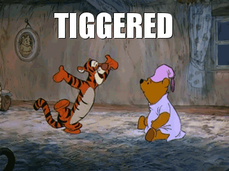

He is a very Bouncy Animal and resembles a tiger. He is always in an electrifying & exuberant mood and loves to bounce, bounce and bounce. He is 23 inches tall and his most standout feature is his springy tail. His character is easily recognizable by the black & orange stripes, a springy tail, and a long chin, beady eyes which all mix well into his bouncy and fun loving personality. He is a bouncy, pouncy, flouncy and a trouncy creature that is always looking to make the most out of what life has to offer. The most wonderful thing about Tiggers is that "I'm the only one!" Tigger likes to bounce a lot, "cause that is what Tiggers do best." His favourite food is the extract of malt but is known to be an extremely fussy eater. He takes a lot of pleasure in being able to "unbounce" some of the other animals in the 100 Acre Wood.
